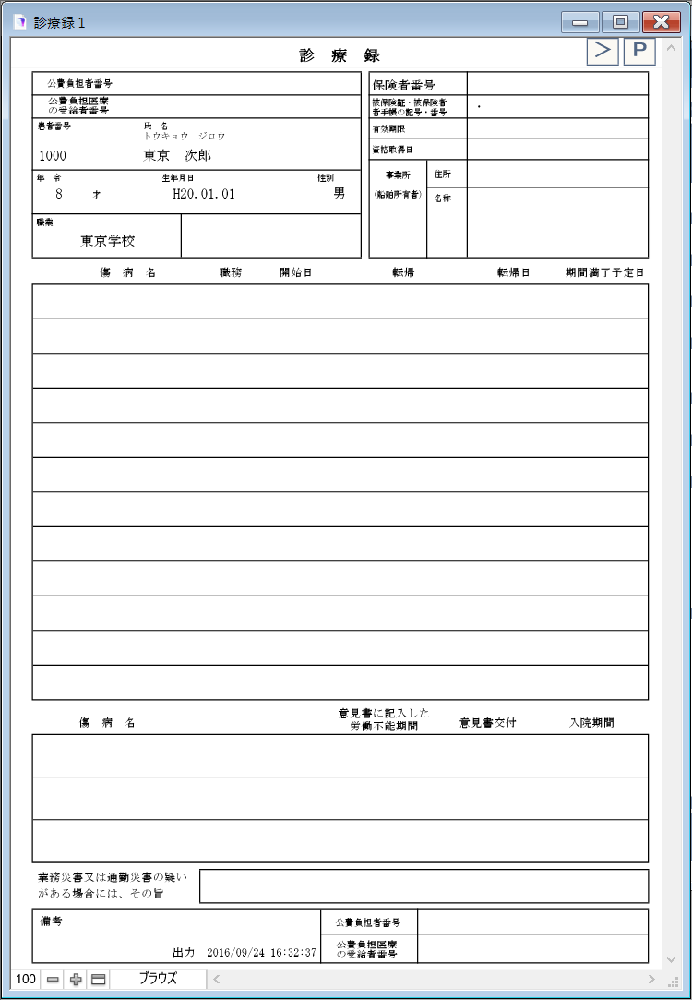
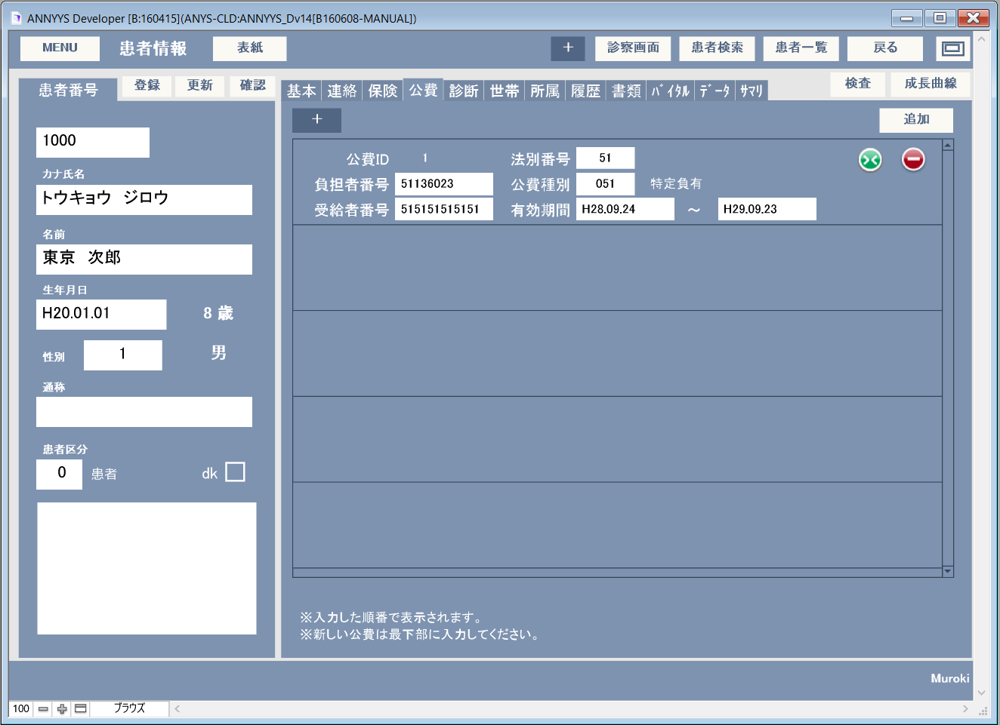
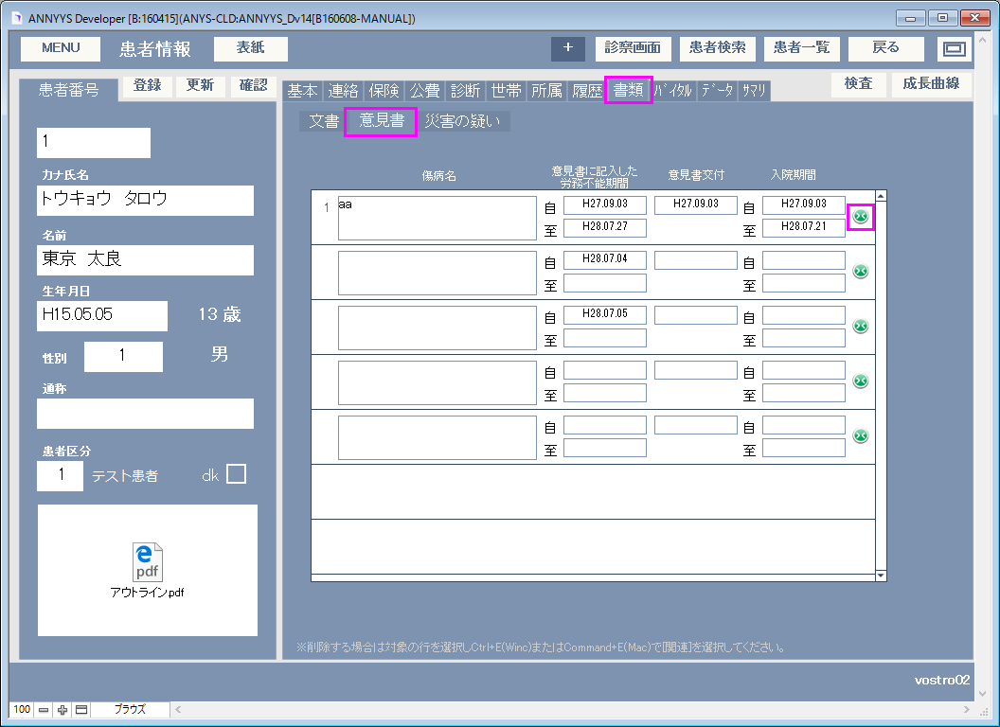
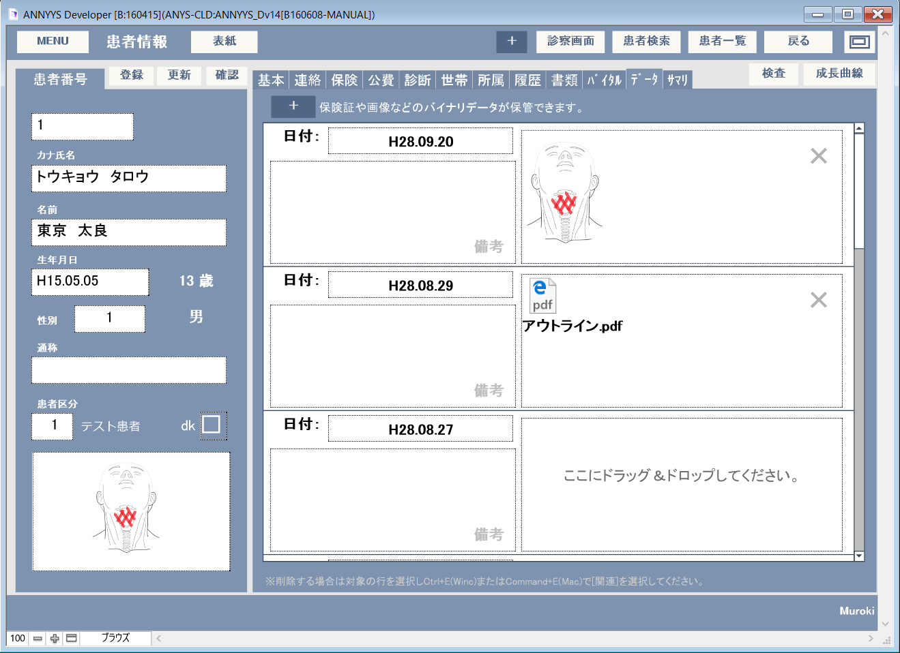
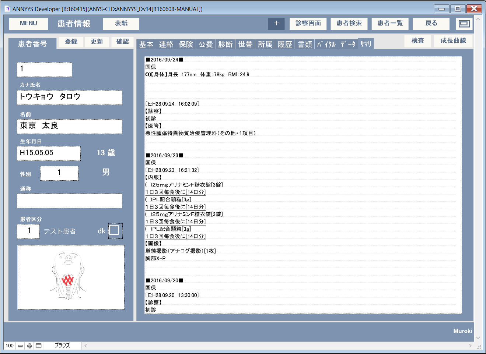

マニュアルの表現に関して
本マニュアルでは#(シャープ)と大文字の英語を組み合わせた記号表現があります。この意味以下のようになりますので、ご理解の上お読みいただけますようお願い申し上げます。
| 記号 | 読み方 | 説明 |
|---|---|---|
| L(エル) | レイアウト | 表示されている画面の名称 |
| B(ビー) | ボタン | 画面上のボタン |
| F(エフ) | フィールド | 画面上の入力スペースのこと |
| T(タブ) | タブ | 画面上のタブスペースのタイトル |
| S(エス) | スクリプト | スクリプトメニューにあるスクリプト名 |
例１）L[メインメニュー] B[外来受付]
メインメニュー画面の、外来受付ボタン（を押す）となります。
例２）L[診療記録] T[病名] F[病名]
診療記録画面の、病名タブの、病名入力スペースとなります。


適宜項目名に従い情報を入力してください。
※自宅電話１は他レコードと関連性があり同一データのものはT[世帯]にリストアップされるようになります。
B[地図]はブラウザを開きGoogleの地図を表示し住所所在地を確認できます。
B[表紙]で標準でカルテ１号用紙の印刷用画面が表示されます。


病名が１ページに入りきらない場合はB[>]で続紙２を表示させて印刷してください。
※カルテ１号用紙（様式第１号（一）の１（第二十二条関係）に準ずる）は続紙として３ページまで用意があり、最大５６病名まで印刷できます。

適宜項目名に従い情報を入力してください。 ※会社（学校）電話は他レコードと関連性があり同一データのものはT[所属]にリストアップされるようになります。 B[地図]はブラウザを開きGoogleの地図を表示し住所所在地を確認できます。
適宜項目名に従い情報を入力してください。
| 新しいレコードを追加します。 | |
 | 該当の情報を無効にします。（最下部へデータが配置されます。） |
| 該当の情報を削除します。 |
最後にB[追加]で確定します。

適宜項目名に従い情報を入力してください。
| 新しいレコードを追加します。 | |
| 該当の情報を無効にします。（最下部へデータが配置されます。） |
| 該当の情報を削除します。 |
最後にB[追加]で確定します。
病名を確認・登録・編集できます。L[診断] T[病名]で確認できます。

L[診察画面] T[病名]で確認できる情報と同一のものです。
T[基本情報] F[電話番号１]が同一のものを同一世帯とみなしリストアップしています。リスト右にあるボタンでそれぞれの情報画面へ移行できます。
T[連絡先] F[会社（学校）電話] が同一のものを同一所属先とみなしリストアップしています。リスト右にあるボタンでそれぞれの情報画面へ移行できます。
過去診療記録が閲覧できます。L[診察画面] T[履歴]の内容と同一のものです。

| 該当患者の印刷用カルテ２号用紙を全て表示します。 | |
| 選択レコード以後のサマリデータを作成し直します。 | |
| 該当レコードの診察画面を表示します。 | |
| 該当レコードの印刷用カルテ２号用紙を表示します。 | |
 | 該当レコードのサマリデータを更新します。 |
紹介状などの書類を閲覧・編集できます。B[文書]で該当の書類を表示できます。

L[診察画面] T[書類] T[文書]で確認できる情報と同一のものです。

傷病手当金支給申請の「労務不能に関する意見」欄に記載する内容を記録するところです。L[診察画面] T[書類] T[意見書]で確認できる情報と同一のものです。B(><)で該当の内容を無効にするとカルテ１号用紙には印刷されません。

「業務災害又は通勤災害の疑い」に関する内容を記録するところです。L[診察画面] T[書類] T[災害の疑い]で確認できる情報と同一のものです。B(><)で該当の内容を無効にするとカルテ１号用紙には印刷されません。

バイタルデータを閲覧・編集できます。L[診察画面] T[バイタル]で確認できる情報と同一のものです。


各種画像データなど様々なデータファイルを日付およびメモとともに保管できます。
保管できるデータ形式は主に以下のようになります。
| 画像の形式 | QuickTime およびその他のマルチメディアファイルの形式 | サウンドの形式 |
| Encapsulated Postscript（.eps） | AVI（.avi） | AIFF（.aif） |
| FlashPix（.fpx） | Cubic VR | AU |
| GIF（.gif） | DV（.dv） | オーディオ CD データ（Mac OS） |
| JPEG/JFIF（.jpg） | FLC | MIDI（.mid） |
| JPEG 2000（.jp2）（Mac OS） | Karaoke（.kar） | MP3（.mp3） |
| MacPaint（.mac）（Mac OS） | Macromedia Flash 5 | SoundFont 2（.sf2） |
| PDF（.pdf）（Mac OS） | MPEG（再生） | Sound（.snd） |
| Photoshop（.psd） | QuickTime ムービー（.qtm） | WAV（.wav） |
| PICS（.pcs）（Mac OS） | QuickTime VR | |
| PICT（.pct） | バーチャルリアリティ（VR） | |
| PNG（.png） | ||
| QuickTime イメージファイル（.qt） | ||
| SGI（.sgi） | ||
| Targa（.tga） | ||
| TIFF（.tif） | ||
| Windows ビットマップ（.bmp） | ||
| Windows メタファイル/拡張メタファイル（.wmf/.emf）（Windows） |

サマリデータを閲覧・編集できます。L[診察画面] T[サマリ]で確認できる情報と同一のものです。